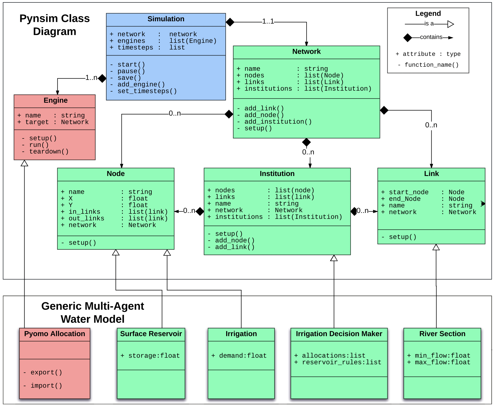

Object Oriented
Programming
My reflections on the units included within the module.
Unit 1: An Introduction to Python Programming and the Object Oriented Programming Paradigm
My reflections about the unit:
This unit focuses on the concept of object orientation and python. The syntax, initialization of objects and how to access the object variables were the main topics covered. The discussion about the philosophical aspect of object oriented approach (Joque, 2016) was particularly interesting. Other topics of interest were the overview of Unified Modeling Language (UML) and the importance of software reusability.
One of the most important points for me this week was to choose an IDE to work on. I used to work on VS Code and AWS Cloud9, but I was looking for a simpler tool which would help me to code in an easier and faster manner. Thanks to the recommendations by Reitz & Schlusser (2016) I had a chance to have a look at the different options and decided to use PyCharm for now. It seems like it is more lightweight compared to VS Code and offers templates for frameworks like Flask or Django.
Forum discussion:
Refer to the article by Padhy et al. (2018), specifically Table 1, where the authors present a list of factors which they consider influence the reusability of a piece of object-oriented software. In this collaborative discussion, you are required to prioritise this list, presenting your argument for the priorities assigned.
Software reuse is a fundamental factor to make progress in the field of software engineering and design robust software, and to benefit from the research and progress that the software engineers and developers have made until today. Regarding the reusable properties listed by N. Padhy et al. (2018), from my point of view, the order of priority is as follows:
- An algorithm used in the program (AP)
- Models in the project (MP)
- 3. Design patterns (DP)
- 4. Modules in the program (MIP)
- Test cases/test design (TCTD)
- Used in the data project (UD)
- Knowledge requirement (KR)
- Requirement analysis (RA)
- Documentation in project (DIP)
- Architecture driven approach (ADP)
- Service contracts (SC)
In my opinion, software design is one of the most challenging aspects of software engineering. However, at the same time, it is relatively easy to benefit from the existing design patterns (DP) and modules (MIP) and implement them to another project. For instance, in the case of web applications, Flask provides a framework which saves the developers from the burden of starting the design process from scratch.
Finally, the development of test cases and test data could be quite tedious, especially for big projects that are working on a sizable database. In such cases, standardized test cases and test data may come in handy (TCTD) and help developers to test their software more efficiently.
According to me, the remainder of the factors rank below these five properties.
e-Portfolio Activities:
Review the article by Di Silvestro & Nadir (2021). Discuss one aspect of this article which you find unexpected.
The value of ePortfolios in terms of reflective learning and personal growth is obvious, as demonstrated Di Silvestro & Nadir (2021). However, what was the most striking in the article was how ePortfolios helps the students to become better team players. Before reading the article, I saw the ePortfolio development as a personal process without a meaningful interaction with peers in which the student reflects on his/her learning process and also showcase any artifacts he/she may want in order to prove his/her competency in a field. However, after reading the article and the research results, I figured out that it was not the case. Apparently, thanks to today’s highly interactive ePortfolios, students exchange their views, correct the mistakes of fellow students and comment on the work of their peers. Without a doubt, this interaction helps students to obtain one of the most important and sought-for qualifications in today’s business world: Ability to work in a team coherently, making a meaningful contribution to the team as a whole, and helping each of the fellow members of the team to succeed and improve.
Key takeaways:
- Objects are user-defined data types that has two components: attributes and behaviours.
- Shallow copy copies the contents of the objects and references to embedded objects. On the other hand, deep copy copies the contents of the objects as well ass all the embedded objects.
- The encapsulation is "the distinction between the inside and the outside of the object" (Jocque, 2016: 345).
- Version Control Systems (VCS) can be classified as Centralized Version Control Systems (CVCS) and Distributed Version Control Systems (DVCS). Git is an example of DVCS.
Unit 2: Object Oriented Analysis - Initial Steps towards Programming in Python
My reflections about the unit:
This week I had a deeper understanding of UML and use case diagrams. I especially found the articles about the usefulness of the use case diagrams pretty interesting. Apparently, many skeptics do not agree to the value of use case diagrams during the requirement analysis or they find other tools (e.g. class diagrams, etc.) more useful. Some researchers even suggest some additional notation to make up for the shortcomings of use case diagrams. However, I strongly think that use case diagrams prove useful in identifying the actors and the main functionalities of a system.
This unit’s Codio activities included important concepts like class, functions and methods. I also wrote a small Python program which comprises of basic employee functions. As part of my independent research about protected variables, I found out that in Python, the concept of “protected variables” is only a convention. In fact, it is possible to access the protected variables from outside the class. However, when programmers see the protected variable notation (e.g. _variable), they take it as a warning from the developer to not to access it from outside the class.
The last but not the least, you can see the pen portrait for a user of a driverless car and a use case diagram that depicts how the user interacts with the car in the Artefacts section.
Key takeaways:
- Pure functions: A pure function does not modify any of the objects passed to it as arguments, and it has no effect, like displaying a value or getting user input, other than returning a value.
- Modifiers: Modifiers are functions that modify the objects they get as parameters. In that case, the changes are visible to the caller.
- In order to make the software more maintainable, it is best to keep interfaces separate from implementations. In case of OOP and objects, methods of a class should not depend on how the attributes are represented.
- Requirements that should always be true in a code are called invariants.
- The values of class variables are the same in all objects/instances. However, the values of instance variables (e.g. __init__()) may change in every object/instance depending on the parameters passed.
Unit 3: UML
My reflections about the unit:
The main theme of the Unit 3 was the different views of UML, and its shortcomings. As we can clearly see, even though it is an indispensable tool in the arsenal of a developer, it is still far from perfect. The most striking finding was that the freedom it provides (e.g. lack of formal semantics) is also its biggest weakness. There are numerous proposed solutions to overcome such difficulties, but the biggest concern here is that UML may lose its flexibility as part of the efforts to introduce strict rules to be followed.
As someone new to UML, this discussion proved very useful to me. In the future, I will certainly consider these shortcomings when using UML, especially when working with other developers who may have different perceptions of UML.
Forum discussion (Summary post):
It has been a fruitful discussion in the forum. To summarize, I prioritized the reusable properties listed by N. Padhy et al. (2018) and ranked algorithms used in the program (AP) first followed by models in the project (MP), design patterns (DP) and modules in the program (MIP).
The feedback I received from my peers were very useful and interesting. As some of them pointed out, I might have attached too little importance to the Requirement Analysis but after much thinking and careful examination of the feedback and posts of my peers, I still think that algorithms and models make a greater impact in terms of software reusability.
To clarify my point of view, I would like to underline two important points:
1. My prioritized list in my initial list is not meant to be in sequential order. As Zukiswa pointed out, I agree that the Requirement Analysis should precede the other steps so that we can find out what the requirements of the projects are. However, since we were expected to put the reusable properties in the order of priority, I opted to put them in the order of importance (i.e. the impact they make on the software design). Therefore, the ones that save the developers more time or effort rank first.
2. The Python libraries/modules/packages are arguably most practical example of my point of view on the extent of usability and the impact reusing algorithms and pieces of code make. For instance, let’s take a closer look at math (2022) module which includes handy functions like factorial, perm and trigonometric functions. Without this module, one would have to write each function from scratch. Likewise, the famous Python package Tensorflow (2022) allows developers to reuse the community-created models. This way, it helps to do a lot of things with minimal effort.
In a nutshell, I think algorithms and models should be ranked at the top of the list when it comes to software reusability because of the reasons I have explained above.
Note: The references are incorporated into the reference list in the end of the page.
e-Portfolio Activities:
Discuss which UML models are most applicable at different stages of the Software Development Life Cycle.
As far as I see, there is no commonly agreed structure of the Software Development Life Cycle (SDLC) and it is typically divided into 5 to 8 steps. I will use the 6-step SDLC to demonstrate which UML models and diagrams should be used throughout the process.
Stage 1: Planning and Requirement Analysis
Model management view
Use case diagram
Stage 2: Defining Requirements
Use case diagram
Collaboration diagram
Stage 3: Designing the Product Architecture
Class diagram
State machine diagram
Collaboration diagram
Stage 4: Building or Developing the Product
Sequence diagram
Class diagram
Stage 5: Testing the Product
Use case diagram
Class diagram
Activity diagram
Stage 6: Deployment in the Market and Maintenance
Deployment diagram
Model management view
Making reference to ‘The Unified Modeling Language Reference Manual Second Edition’, use the State Machine Diagram in Figure 3-7 to design a similar model for a washing machine.

Figure 1: State machine diagram for a washing machine.
Key takeaways:
- A UML view - is a subset of UML modeling constructs.
- The views are broken down into three areas: structural classification, dynamic behavior, and model management.
- Lack of a formal UML semantics and the freedom it provides lead to different interpretation of UML by practitioners.
- Since the specifications of a design are scattered over multiple views, they can easily go unnoticed.
Unit 4: Applying a UML Model to a Program Implementation: UML in Practice
My reflections about the unit:
In this unit, further UML models were introduced, including the class diagram which helps to identify the classes that would be used in a program. A class typically includes attributes and methods (or functions). I think apart from the other UML models, class diagrams are especially important for object oriented programming because it helps a lot to think about classes that would be instantiated as objects.
Moreover, we had the opportunity to see class, sequence, state and activity diagrams in action with examples in this week’s seminar. The approach introduced by the tutor to identify the classes from a pen portrait or a description of a program was especially useful for me.
Finally, a couple of IDEs were introduced in this week’s additional reading. While each of them seems to be a good choice for a python IDE, my two favorites are: 1. PyCharm because it has a very intuitive interface and offers some handy features such as templates for frameworks like Flask. 2. Visual Studio Code because it supports multiple programming languages and also variety of plugins to extend its functionality and allow using 3rd party services like AWS or Azure.
Key takeaways:
- Lack of active objects and the inability to depict interaction between actors stand out as two important deficiencies of UML.
- Interaction between use cases is impossible to model in UML. This is another important shortcoming which should be overcome.
Unit 5: More on Classes
My reflections about the unit:
Relatively more complex subjects like abstract base classes and decorators were explored with examples in this unit. Personally, I did not use the decorators in my code writing practices until this week, but having learnt the power of decorators, I am willing to employ them in the way ahead. Even though I am not sure how the interfaces can be useful yet, I am sure I will figure it out through practice.
Pair programming was another interesting concept that was introduced this week. It seems especially useful to transfer knowledge from the senior programmers to novice programmers. Since it is also possible to practice pair programming in a remote environment, remote teams can also capitalize on it.
As part of the e-portfolio activities, I have written small Python program in which I employed polymorphism (method overriding). You can see my code on the Module’s Artefacts page.
Key takeaways:
- Abstract base classes provide a blueprint for concrete classes and do not include the implementation.
- Types of interfaces in Python: 1. Informal (methods can be overridden) 2. Formal (uses Python’s ABC module).
- Types of polymorphism: Dynamic polymorphism (method overriding), coercion, sub typing, parametric polymorphism.
- Duck typing is a concept where the type/class of an object is less important than its methods. The programmer do not check types but check the presence of a method or attribute.
- A decorator is a function that takes another function and extends the behavior of this function without explicitly modifying it (Hjelle, 2018).
- Pair programming is the practice where two people write code together on one machine. Usually, one of them (preferably the more experienced one) assumes the “navigator” role and focuses on the strategy and double-checking the code that’s being written and the other one (less experienced one) assumes the “driver” role and writes the code, focusing on the tactical side. These two switch roles regularly (Böckeler & Siessegger, 2020).
Unit 6: Abstract Methods and Interfaces
My reflections about the unit:
The main theme of the Unit 6 was the interfaces and abstract classes (more specifically, abstract methods). From my point of view, this is one of the most confusing aspects of object-oriented programming (OOP), because one understands the importance of interfaces only after he/she grasps the foundations of object oriented design and the concept of software reuse. Obviously, interfaces play an important role to streamline the design process, by standardizing the subclasses that will be created in the program and avoiding creation of subclasses and objects arbitrarily.
After spending considerable time in reading, researching and coding, I developed a fairly good understanding of how abstract base classes work. Now, I am aware of how the abc module is used while creating abstract base classes and how the decorators are used when defining abstract methods. As a practice, I wrote a simple Python program in which I defined an abstract class with three abstract methods that allows a user to perform basic banking operations (e.g. check balance, deposit and withdraw) via a text-based interface.
Apart from that, this week’s Codio module about Encapsulation proved very useful for me in order to gain an understanding of the concept of getters, setters and using property() function as well as the @property and @gettername.setter decorators.
The last but not the least, using design patterns, without a doubt, is a great practice. As shown by Gamma et al. (2009) there are common patterns that can be used as a starting point when designing a new system. This practice helps to avoid risking having to redesign the software and save time (do not rediscover what has already been discovered).
Seminar preparation questions:
1. Discuss the metrics used to assess the features of an object oriented program.
Dubey & Rana (2010) succinctly summarizes the metrics used when assessing the features of an object-oriented program as follows:
- Weighted methods per Class (WMC): The number of methods defined or within a class. It is an indication of the complexity of a class.
- Response sets for Class (RFC): The number of methods defined within a class hierarchy that is executed in response to a message. Higher numbers indicate to a more error-prone and a less usable system.
- Lack Of Cohesion in Methods (LCOM): Cohesion is an indication of the extent the operations in a class are related with each other. Therefore, lower LCOM is desired.
- Coupling Between Object Classes (CBO): It is a measure of coupling between two objects. For instance, if an object uses the methods of the other, these two objects are considered “coupled”. Therefore, a lower CBO is desired.
- Depth of Inheritance Tree of a class (DIT): DIT is the distance between the root (highest superclass) and the final node (lowest child class) of the class hierarchy. Since having a deeper class hierarchy leads to a more complex and an error-prone system, lower DIT is desired.
- Number of Children of a class (NOC): NOC is the number of immediate child classes of a class. The higher the number, the more difficult it is to detect errors.
2. Develop a Python program which has three abstract methods and one subclass which allows a user to perform banking operations.
I developed a program which allows user to perform three basic banking operations (i.e., check balance, deposit and withdraw) via a text-based interface. You can check it out here.
3. Read the article by Knox et al. (2018) and answer the following questions:
a. What is Component-based modelling?
Component-based modeling is a methodology which relies on using “pluggable model components”. In terms of software reuse, if the components that would be used in the new project already exists from the past projects, they can be readily used. If the required components do not exist, they can be created and can be used later in the future projects as well.
b. Upon what do component-based modelling frameworks depend?
Component-based modelling relies on a somewhat standardized structure upon which components can be easily integrated into the system. Therefore, designers can easily integrate the already existing components into the system and also create components which can easily be used in the future.
c. Within the context of the work presented in this paper, what is Pynsim?
Pynsim is a modelling framework for networked resource simulators. It supports agent-based modelling and allows the integration of different models into the simulation.
d. How does Pynsim achieve its goal when using object-oriented Python programming?
In the paper, the components that would be used in the system (i.e. Network, Node, Link, Institution, Engines and Simulator) are designed as classes in accordance with the Pynsim framework. Pynsim already provides abstract classes which could be inherited and extended according the specifics of the project. This is the most important feature of Pynsim which facilitated the design process.

Figure 2: UML diagram depicting how base classes provided by Pynsim are extended to make up a generic model (Knox et al., 2018).
Key takeaways:
- An object’s class and type are two different things. Class refers to the object’s implementation, whereas type refers to its interface.
- Most programming languages do not make the distinction between interface and implementation inheritance, but people make the distinction in practice.
- Using interfaces reduces the implementation dependencies between subsystems. “Program to an interface, not an implementation.” (Gamma et al., 2009)
- Two common techniques for reusing functionality in OOP: class inheritance and object composition.
- A toolkit is a set of related and reusable classes designed to provide useful, general-purpose functionality.
- A framework defines the overall architecture of the application. It predefines the design parameters for the designer who should focus on the implementation of the specific features of the application. For instance, Flask framework offers a framework for web applications.
- Encapsulation is the practice of grouping the related data and methods together and restricting access to them.
- Python doesn’t have “public” or “private” keywords and it relies on the conventions to restrict access to private attributes and methods.
- Single underscore (_) means that the attribute or method is considered private.
- Name mangling is the process of mangling the private attribute and method names with the class name. For instance, Python automatically changes the __privatemethod method name to _Classname__privatemethod. It helps to avoid name collisions and it gives the appearance of private attributes/methods because they cannot be called bye their names directly.
- Getters return a private attribute and setters update a private attribute.
References:
Böckeler, B. & Siessegger, N. (2020) On Pair Programming. Available from: https://martinfowler.com/articles/on-pair-programming.html [Accessed 15 July 2022].
Di Silvestro, F. & Nadir, H. (2021) The Power of ePortfolio Development to Foster Reflective and Deeper Learning in an Online Graduate Adult Education Program, Adult Learning 32(4): 154–164.
Dubey, S. K. & Rana, A. (2010) Assessment of Usability Metrics for Object-Oriented Software System. ACM SIGSOFT Software Engineering Notes 35(6).
Gamma, E., Helm, H., Johnson, R. & Vlissides, J. (2009) Design Patterns: Elements of Reusable Object-Oriented Software. Massachusetts: Addison-Wesley.
Hjelle, G. A. (2018) Primer on Python Decorators. Available from: https://realpython.com/primer-on-python-decorators/ [Accessed 15 July 2022].
Joque, J., 2016. The Invention of the Object: Object Orientation and the Philosophical Development of Programming Languages. Philosophy & Technology, 29(4), pp. 335-356.
Kang, W. B. F. &. K., 2005. Software Reuse Research: Status and Future. IEEE TRANSACTIONS ON SOFTWARE ENGINEERING, 31(7), pp. 529-536.
Knox, S., Meier, P., Yoon, J. & Harou, J. J. (2018) A python framework for multi-agent simulation of networked resource systems. Environmental Modelling & Software 103: 16-28.
Padhy, D. N. &. S. S. &. S. R., 2018. State-of-the-Art Object-Oriented Metrics and Its Reusability: A Decade Review. In: V. B. S. D. Suresh Chandra Satapathy, ed. Smart Computing and Informatics. s.l.:Springer Singapore, pp. 431-441.
Python.org, 2022. Python 3.10.5 Documentation. Available from: https://docs.python.org/3/library/math.html [Accessed 1 July 2022].
Reitz, K. & Schlusser, T. (2016) The Hitchhiker’s Guide to Python. 1st ed. Sebastopol: O'Reilly Media.
TensorFlow, 2022. TensorFlow. Available from: https://www.tensorflow.org [Accessed 2 July 2022].